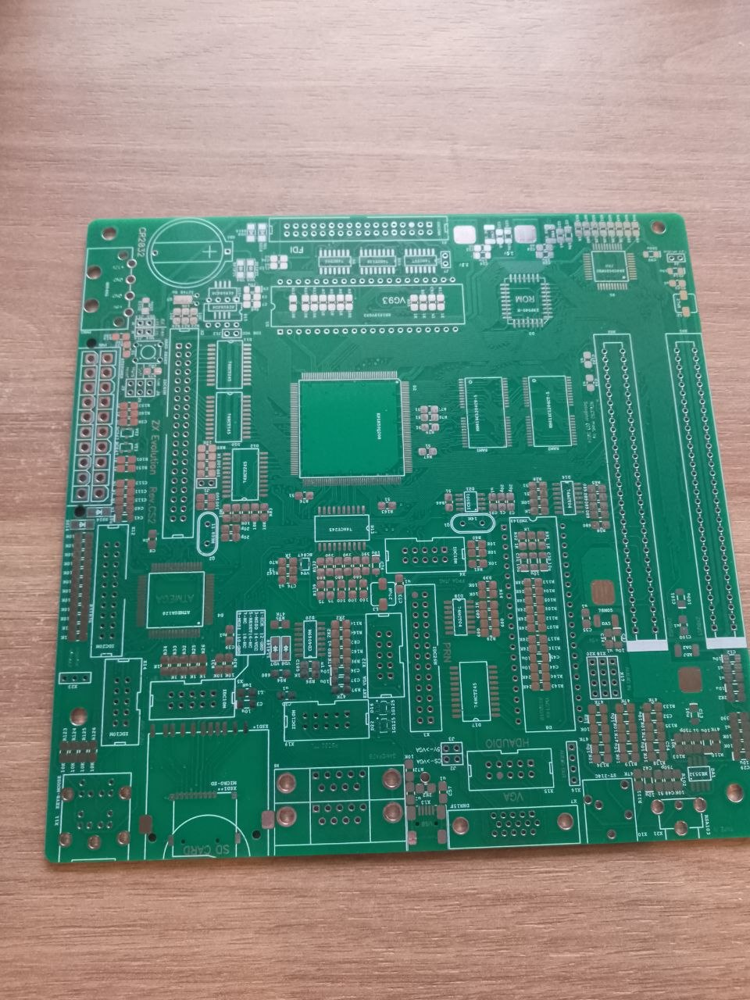

ZX Evolution CS2 — це не просто клон ZX Spectrum, а модульна платформа для створення власних ретро-систем.
На відміну від класичних плат, тут акцент зроблено не на фіксовану конфігурацію, а на гнучкість і розширення.
Ви можете будувати систему поступово, додаючи:
• відеомодулі
• звукові розширення
• контролери та інтерфейси
Це ідеальне рішення для тих, хто хоче не просто “зібрати Spectrum”, а експериментувати з архітектурою.
CS2 підходить для:
• DIY ентузіастів
• розробників ретро-проєктів
• глибокого занурення в залізо ZX-екосистеми
Це вже не копія. Це платформа.
